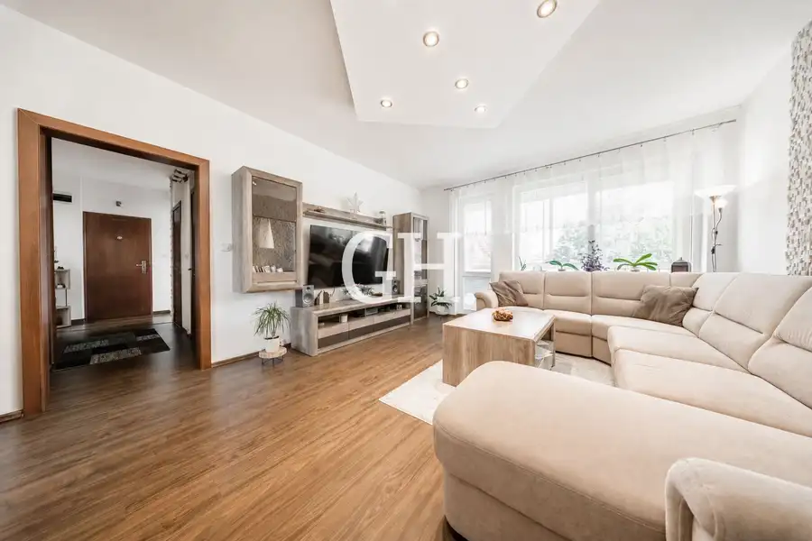
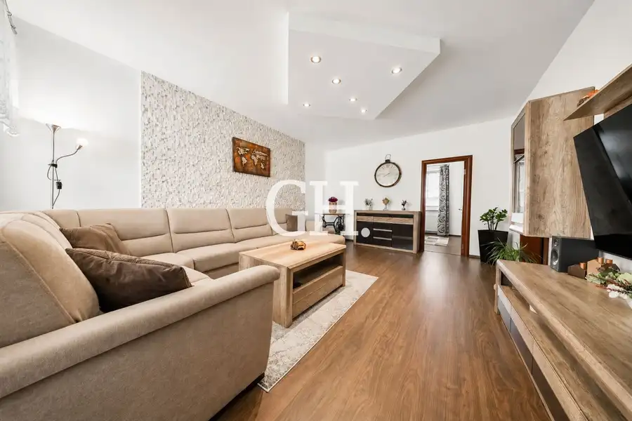
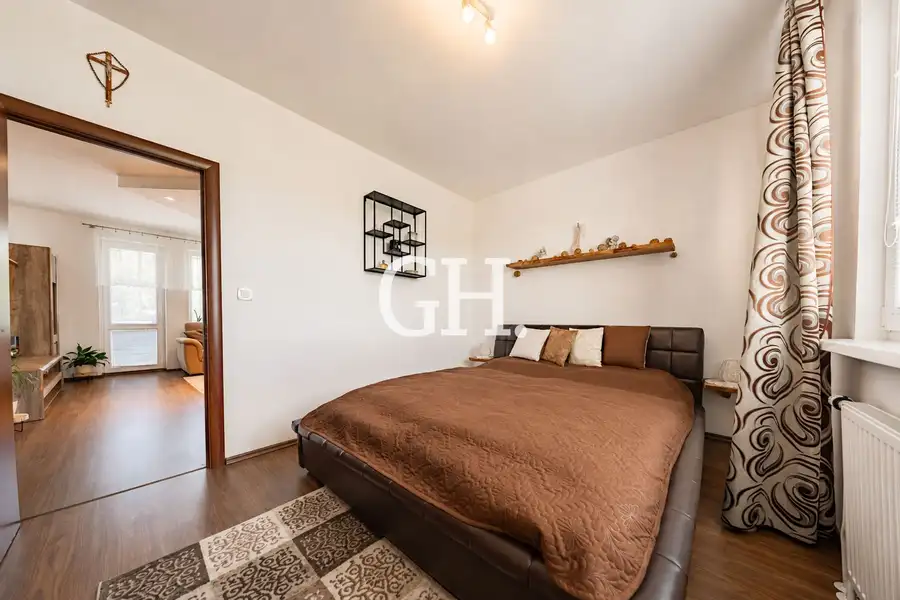
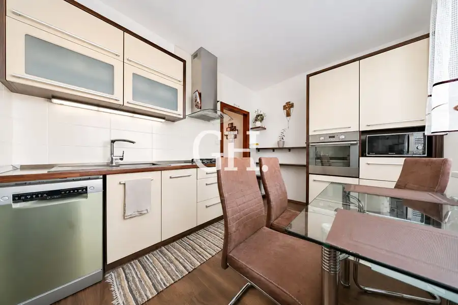
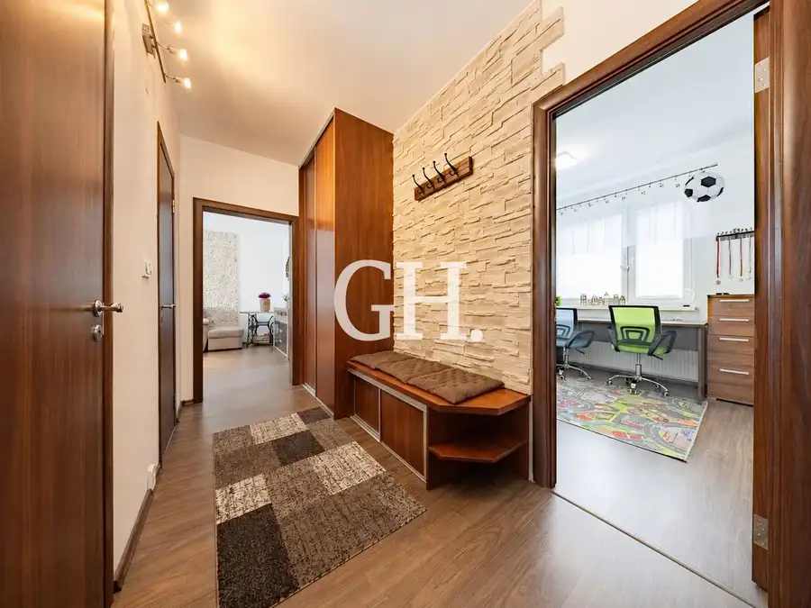
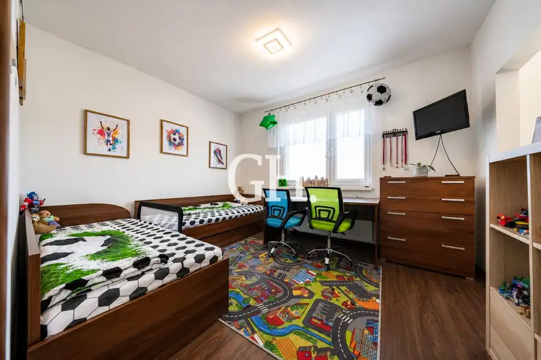
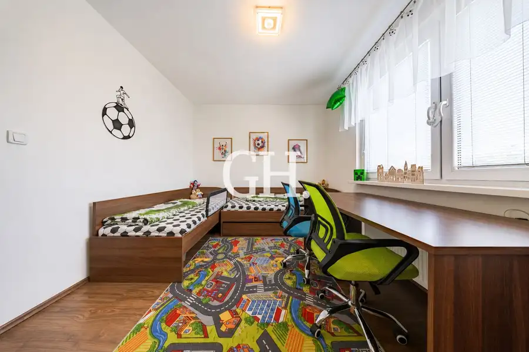

Budovateľská – 3,5-izbový byt po kompletnej rekonštrukcii, loggia, 75 m²
Prešov








- Dispozícia3-izbový
- Plocha75 m²
- Poschodie3. z 5
- StavKompletná rekonštrukcia
- VlastníctvoOsobné
O nehnuteľnosti
GH Real ponúka na predaj priestranný a svetlý 3,5-izbový byt po kompletnej rekonštrukcii v širšom centre Prešova, na Budovateľskej ulici(smer Pavlovičovo námestie)Byt s úžitkovou plochou 75 m² sa nachádza na ideálnom 3. poschodí z 5 v zateplenom panelovom bytovom dome s výťahom. Je veľmi dobre dispozične riešený, ponúka dostatok priestoru pre pár aj rodinu a jeho veľkou výhodou je loggia a príjemná orientácia nočnej časti bytu do pokojného vnútrobloku.K bytu prislúcha pivnica.PREČO PRÁVE TENTO BYT?Byt je vhodnou voľbou pre tých, ktorí hľadajú priestranné bývanie po kompletnej rekonštrukcii bez potreby ďalších zásadných úprav, pričom chcú zostať v pešej dostupnosti centra mesta.Veľkým benefitom je kombinácia výbornej lokality a pokojného prostredia. Nočná časť bytu je orientovaná do tichého vnútrobloku, z ktorého je príjemný výhľad na okolité rodinné domy a Kalváriu. Za bytovým domom sa nachádza detské ihrisko s komunitným posedením.REKONŠTRUKCIA BYTUByt prešiel kompletnou rekonštrukciou v roku 2014, ktorá zahŕňala:•rekonštrukciu bytového jadra vrátane výmeny rozvodov vody a kanalizácie,•sadrokartónové stropy v bytovom jadre,•novú elektroinštaláciu,•nové stierky,•novú kuchynskú linku so vstavanými spotrebičmi,•plávajúce podlahy v kombinácii s dlažbou,•plastové okná s izolačným dvojsklom, •nové tesnenia na oknách.•nové obložkové zárubne a interiérové dvere v celom byte,•bezpečnostné vchodové dvere,•zasklenie loggie v roku 2024,DISPOZÍCIADispozícia bytu je praktická a ponúka dostatok priestoru aj pre rodinné bývanie:•vstupná chodba,•samostatné WC,•samostatná kúpeľňa so sprchovacím kútom,•samostatná kuchyňa,•obývacia izba s prechodom do spálne,•detská izba s prechodom do pracovne.BYTOVÝ DOMBytový dom prešiel modernizáciou, v rámci ktorej bolo realizované:•zateplenie objektu,•nová strecha,•renovácia spoločných priestorov,•výmena stúpacích rozvodov,•modernizácia elektroinštalácie,•výmena okien v spoločných priestoroch,•nové vchodové dvere.LOKALITA – ŠIRŠIE CENTRUM PREŠOVABudovateľská ulica v blízkosti Pavlovičovho námestia patrí medzi vyhľadávané lokality širšieho centra Prešova. Ponúka výbornú pešiu dostupnosť do centra mesta a zároveň pokojnejšie prostredie vhodné na bývanie.V bezprostrednom okolí máte k dispozícii kompletnú občiansku vybavenosť:•centrum mesta pár minút pešo,•materská škola priamo oproti bytovému domu,•OC Novum v pešej dostupnosti,•školy a ďalšia občianska vybavenosť,•reštaurácie a kaviarne,•posilňovňa,•cyklistický chodník,•detské ihrisko,•rezidenčné parkovanie.Táto lokalita je vhodná pre jednotlivca, pár aj rodinu s deťmi. Výhodou je najmä spojenie blízkosti centra, dobrej občianskej vybavenosti a pokojného vnútrobloku.CENA A SLUŽBYCena nehnuteľnosti zahŕňa kompletné zabezpečenie prevodu vlastníckych práv, právny servis a vypracovanie zmluvnej dokumentácie.O právnu istotu sa postará advokátska kancelária. Naši špecialisti na finančné poradenstvo vám zároveň radi pomôžu s vybavením hypotekárneho úveru a zabezpečia získanie výhodných podmienok financovania.KONTAKTV prípade záujmu o obhliadku alebo bližšie informácie ma neváhajte kontaktovať.Bc. Beáta FedoršováCertifikovaná realitná maklérka NARKS0944 500 802fedorsova@ghrealke.com
Parametre
- Cena vrátane energií
- Nie
- Druh
- 3 izbový byt
- Dátum zverejnenia
- 03. 09. 2026
- Energetický certifikát budovy
- nie je
- Podlažie
- 3
- Počet nadzemných podlaží
- 5
- Rok kolaudácie
- 1980
- Stav nehnuteľnosti
- Kompletná rekonštrukcia
- Typ
- Predaj
- Typ konštrukcie
- Panelová
- Umiestnenie
- Ďalšie nadzemné podlažie
- Vlastníctvo
- Osobné
- Vybavenie
- Výťah
- Úžitková plocha
- 75 m²